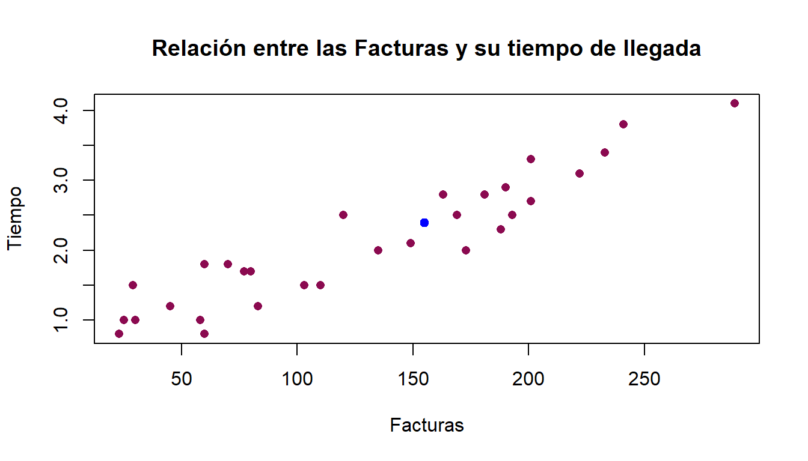

Capítulo 3 Intervalos de confianza
Anteriormente hemos obtenido, de manera puntual, las estimaciones de los parámetros desconocidos del modelo de regresión lineal simple. Sin embargo, en ocasiones se puede tener una gran variabilidad en el ajuste de los parámetros, por lo que realizar inferencia puntual no siempre puede ser recomendable, es por ello que desarrollaremos intervalos de confianza para proporcionar estimaciones por intervalo en el cual, el parámetro de interés tenga una alta probabilidad de pertenecer a este conjunto.
3.1 Intervalo para \(\beta_{0}\)
Dado que el estimador de \(\beta_{0}\) es una combinación lineal, de igual forma se tiene una combinación lineal de variables aleatorias normales independientes, por lo que \(\beta_{0}\) tiene una distribución normal asociada con media y varianza demostrada en el teorema 2.4.
\[\hat{\beta_{0}} \sim N \left( \beta_{0},\left(\frac{1}{n}+\frac{\overline{x}^2}{S_{xx}}\right)\sigma^2\right).\] Estandarizando:
\[\frac{\hat{\beta_{0}}-\beta_{0}}{\sqrt{\left(\frac{1}{n}+\frac{\overline{x}^2}{S_{xx}}\right)\sigma^2}}\sim N (0,1).\] Como \(\frac{(n-2)}{\sigma^2}\hat{\sigma}^2\sim\chi^2_{(n-2)}\) se tiene:
\[\frac{\frac{\hat{\beta_{0}}-\beta_{0}}{\sqrt{\left(\frac{1}{n}+\frac{\overline{x}^2}{S_{xx}}\right)\sigma^2}}}{\sqrt{\frac{\frac{(n-2)}{\sigma^2}\hat{\sigma}^2}{n-2}}}\sim t_{(n-2)}\] Simplificando se obtiene la cantidad pivotal para \(\hat{\beta_{0}}:\)
\[\frac{\hat{\beta_{0}}-\beta_{0}}{\sqrt{\left(\frac{1}{n}+\frac{\overline{x}^2}{S_{xx}}\right)\hat{\sigma}^2}} \sim t_{(n-2)}\] De esta manera, construyendo el intervalo de confianza con la cantidad pivotal:
\[\mathbf{P}\left[-t^{\alpha/2}_{(n-2)}<\frac{\hat{\beta_{0}}-\beta_{0}}{\sqrt{\left(\frac{1}{n}+\frac{\overline{x}^2}{S_{xx}}\right)\hat{\sigma}^2}}< t^{\alpha/2}_{(n-2)}\right]=1-\alpha\] \[\mathbf{P}\left[-t^{\alpha/2}_{(n-2)}\sqrt{\left(\frac{1}{n}+\frac{\overline{x}^2}{S_{xx}}\right)\hat{\sigma}^2}<\hat{\beta_{0}}-\beta_{0}< t^{\alpha/2}_{(n-2)}\sqrt{\left(\frac{1}{n}+\frac{\overline{x}^2}{S_{xx}}\right)\hat{\sigma}^2}\right]=1-\alpha\]
\[\mathbf{P}\left[-t^{\alpha/2}_{(n-2)}\sqrt{\left(\frac{1}{n}+\frac{\overline{x}^2}{S_{xx}}\right)\hat{\sigma}^2}<\beta_{0}-\hat{\beta_{0}}< t^{\alpha/2}_{(n-2)}\sqrt{\left(\frac{1}{n}+\frac{\overline{x}^2}{S_{xx}}\right)\hat{\sigma}^2} \ \right]=1-\alpha\] Sumando \(\hat{\beta_{0}}\) en todas las desigualdades:
\[\mathbf{P}\left[\hat{\beta_{0}}-t^{\alpha/2}_{(n-2)}\sqrt{\left(\frac{1}{n}+\frac{\overline{x}^2}{S_{xx}}\right)\hat{\sigma}^2}<\beta_{0}< \hat{\beta_{0}}+t^{\alpha/2}_{(n-2)}\sqrt{\left(\frac{1}{n}+\frac{\overline{x}^2}{S_{xx}}\right)\hat{\sigma}^2} \ \right]=1-\alpha\] Por lo tanto, el intervalo de confianza \(1-\alpha\) para \(\beta_{0}\) es:
\[\beta_{0} \in \left( \hat{\beta_{0}}-t^{\alpha/2}_{(n-2)}\sqrt{\left(\frac{1}{n}+\frac{\overline{x}^2}{S_{xx}}\right)\hat{\sigma}^2} \ \ , \ \ \hat{\beta_{0}}+t^{\alpha/2}_{(n-2)}\sqrt{\left(\frac{1}{n}+\frac{\overline{x}^2}{S_{xx}}\right)\hat{\sigma}^2} \ \right).\]
3.2 Intervalo para \(\beta_{1}\)
Dado que el estimador de \(\beta_{1}\) es una combinación lineal, de igual forma se tiene una combinación lineal de variables aleatorias normales independientes, por lo que \(\beta_{1}\) tiene una distribución normal asociada con media y varianza demostrada en el teorema 2.4.
\[\hat{\beta_{1}}\sim N \left(\beta_{1},\frac{\sigma^2}{S_{xx}}\right)\] Estandarizando:
\[\frac{\hat{\beta_{1}}-\beta_{1}}{\sqrt{\frac{\sigma^2}{S_{xx}}}}\sim N(0,1).\] Como \(\frac{(n-2)}{\sigma^2}\hat{\sigma}^2\sim\chi^2_{(n-2)}\) se tiene:
\[\frac{\frac{\hat{\beta_{1}}-\beta_{1}}{\sqrt{\frac{\sigma^2}{S_{xx}}}}}{\sqrt{\frac{\frac{(n-2)}{\sigma^2}\hat{\sigma}^2}{n-2}}} \sim t_{(n-2)}\]
Por lo tanto, simplificando se obtiene una cantidad pivotal para \(\hat{\beta_{1}}:\)
\[\frac{\hat{\beta_{1}}-\beta_{1}}{\sqrt{\frac{\hat{\sigma}^2}{S_{xx}}}}\sim t_{(n-2)}\] Construyendo un intervalo de confianza \(1-\alpha\) para \(\beta_{1}\) se tiene que:
\[\mathbf{P}\left[-t^{\alpha/2}_{(n-2)} < \frac{\hat{\beta_{1}}-\beta_{1}}{\sqrt{\frac{\hat{\sigma}^2}{S_{xx}}}} < t^{\alpha/2}_{(n-2)}\right]=1-\alpha\] \[\mathbf{P}\left[-t^{\alpha/2}_{(n-2)} \sqrt{\frac{\hat{\sigma}^2}{S_{xx}}} < \hat{\beta_{1}}-\beta_{1}< t^{\alpha/2}_{(n-2)} \sqrt{\frac{\hat{\sigma}^2}{S_{xx}}} \ \right]=1-\alpha\]
\[\mathbf{P}\left[-t^{\alpha/2}_{(n-2)} \sqrt{\frac{\hat{\sigma}^2}{S_{xx}}} < \beta_{1}-\hat{\beta_{1}}< t^{\alpha/2}_{(n-2)} \sqrt{\frac{\hat{\sigma}^2}{S_{xx}}} \ \right]=1-\alpha\]
Sumando \(\hat{\beta_{1}}\) en todas las desigualdades:
\[\mathbf{P}\left[\hat{\beta_{1}}-t^{\alpha/2}_{(n-2)} \sqrt{\frac{1}{S_{xx}}\hat{\sigma}^2} < \beta_{1}< \hat{\beta_{1}}+t^{\alpha/2}_{(n-2)} \sqrt{\frac{1}{S_{xx}}\hat{\sigma}^2} \ \right]=1-\alpha\]
Por lo tanto, el intervalo de confianza \(1-\alpha\) para \(\beta_{1}\) es:
\[\beta_{1} \in \left( \hat{\beta_{1}}-t^{\alpha/2}_{(n-2)} \sqrt{\frac{1}{S_{xx}}\hat{\sigma}^2} \ \ , \ \ \hat{\beta_{1}}+t^{\alpha/2}_{(n-2)} \sqrt{\frac{1}{S_{xx}}\hat{\sigma}^2} \ \right).\]
3.3 Intervalo para \(\sigma^2\)
Para construir el intervalo de confianza para \(\sigma^2\) se observa que se posee una cantidad pivotal asociada de la forma:
\[\frac{(n-2)\hat{\sigma}^2_{MC}}{\sigma^2}\sim \chi^2_{(n-2)}.\] La distribución \(\chi^2\) no es una distribución simétrica por lo que se plantean los cuantiles \(W_{\alpha/2}\) y \(W_{1-\alpha/2}\) que corresponden a la valuación de la \(\chi^2_{(n-2)}\) en el cuantil \(\alpha/2\) y \(1-\alpha/2,\) respectivamente.
\[\mathbf{P}\left[W_{\alpha/2}<\frac{(n-2)\hat{\sigma}^2_{MC}}{\sigma^2}< W_{1-\alpha/2}\right]=1-\alpha\]
Obteniendo el recíproco en ambas partes de las desigualdades se observa que:
\[\mathbf{P}\left[\frac{1}{W_{\alpha/2}}>\frac{\sigma^2}{(n-2)\hat{\sigma}^2_{MC}}>\frac{1} {W_{1-\alpha/2}}\right]=1-\alpha\] Reordenando el intervalo de confianza se tiene que:
\[\mathbf{P}\left[\frac{(n-2)\hat{\sigma}^2_{MC}}{W_{\alpha/2}}>\sigma^2>\frac{(n-2)\hat{\sigma}^2_{MC}} {W_{1-\alpha/2}}\right]=1-\alpha\] Por la estimación insesgada propuesta para \(\sigma^2\) se sabe que \(\hat{\sigma}^2_{MC}=\frac{1}{n-2}\sum_{i=1}^{n}(y_i-\hat{y_{i}})^2\) así:
\[\mathbf{P}\left[\frac{\sum_{i=1}^{n}(y_i-\hat{y_{i}})^2}{W_{1-\alpha/2}}<\sigma^2<\frac{\sum_{i=1}^{n}(y_i-\hat{y_{i}})^2} {W_{\alpha/2}}\right]=1-\alpha\]
Por convención se usa que \(W_{1-\alpha/2}=\chi^{2(1-\alpha/2)}_{(n-2)}\) y \(W_{\alpha/2}=\chi^{2(\alpha/2)}_{(n-2)}.\) De esta manera el intervalo de confianza para \(\sigma^2\) es:
\[\mathbf{P}\left[\frac{\sum_{i=1}^{n}(y_i-\hat{y_{i}})^2}{\chi^{2(1-\alpha/2)}_{(n-2)}}<\sigma^2<\frac{\sum_{i=1}^{n}(y_i-\hat{y_{i}})^2} {\chi^{2(\alpha/2)}_{(n-2)}}\right]=1-\alpha,\] reescribiendo el intervalo de confianza en su forma explícita:
\[\sigma^2 \in \left( \frac{\sum_{i=1}^{n}(y_i-\hat{y_{i}})^2}{\chi^{2(1-\alpha/2)}_{(n-2)}} \ \ , \ \ \frac{\sum_{i=1}^{n}(y_i-\hat{y_{i}})^2} {\chi^{2(\alpha/2)}_{(n-2)}} \right).\]
3.4 Intervalo para el valor esperado \(y\)
Después de haber realizado un modelo de regresión lineal; como vimos en el teorema 2.1, el valor esperado de \(y_{i}\) es \(\mathbf{E}[y_{i}]=\beta_{0}+\beta_{1}x_{i},\) para toda \(i=1,\ldots,n,\) en el caso de que se conozca un nuevo valor \(x'\) de la variable regresora \(x\) entonces se podrá calcular el valor esperado de \(y\) al sustituir los estimadores de \(\beta_{0}\) y \(\beta_{1},\) respectivamente. Sin embargo, al realizar estas sustituciones se tiene asociada diversas variabilidades, como la desviación estándar de los estimadores. Es por ello que se realizan intervalos de confianza para el valor esperado \(y\) con la finalidad de aportar mejores ajustes con un nivel de significancia \(\alpha.\)
El valor esperado de \(y\) dado que se conoce un nuevo valor \(x'\) de \(x,\) hace referencia a la esperanza condicional de la forma \(\mathbf{E}[y|x=x']=\beta_{0}+\beta_{1}x',\) la cual es denotada como \(\mu_{x}=\mathbf{E}[y|x=x' ],\) sin embargo, al desconocer el valor de \(\beta_{0},\beta_{1}\) se realiza la estimación del valor de \(y\) usando los estimadores de mínimos cuadrados, es decir, \(\mathbf{E}[\widehat{y|x=x'}]=\hat{\beta_{0}}+\hat{\beta_{1}}x',\) usualmente escrita como \(\hat{\mu}_{x}=\mathbf{E}[\widehat{y|x=x'}].\)
Por ejemplo, suponga que después de estimar un modelo de regresión lineal simple se obtuvo como parámetros \(\hat{\beta_{0}}=3\) y \(\hat{\beta_{1}}=5,\) un año después se observa que el valor de la variable regresora es \(x'=10,\) de esta manera el valor esperado dado \(x'\) es:
\[\hat{\mu}_{x}=\hat{\beta_{0}}+\hat{\beta_{1}}x'.\]
Sustituyendo los valores del ejemplo:
\[\hat{\mu}_{x}=3+5(10)\]
\[\therefore \hat{\mu}_{x}=53.\]
Es decir, el valor esperado de \(y\) dado \(x'=10\) es 53 unidades. Debido a que cada \(y_{i}\) es una combinación lineal se sabe que los valores esperados se distribuyen con normalidad es decir:
\[\hat{\mu}_{x}\sim N \ (\mathbf{E}[\mu_{x}],Var[\mu_{x}]).\]
Teorema 2.11 Sea \(\hat{\mu}_{x}=\hat{\beta_{0}}+\hat{\beta_{1}}x'\) el valor esperado de \(y\) dado \(x'\left( \mathbf{E}[\widehat{y|x=x'}]\right),\) entonces cumple con las propiedades de esperanza y varianza:
a) \(\mathbf{E}[\hat{\mu}_{x}]=\mu_{x}\) donde \(\mu_{x}=\beta_{0}+\beta_{1}x'.\)
b) \(Var[\hat{\mu}_{x}]=\left(\frac{1}{n}+\frac{(x'-\overline{x})^2}{S_{xx}}\right)\sigma^2.\)
Demostración
a) Para la esperanza se sabe que \(\hat{\mu}_{x}=\mathbf{E}[\widehat{y|x=x'}]\) así sustituyendo se sabe:
\[\mathbf{E}[\hat{\mu}_{x}]=\mathbf{E}\left[\hat{\beta_{0}}+\hat{\beta_{1}}x' \right].\] Por propiedades de la esperanza se tiene:
\[\mathbf{E}[\hat{\mu}_{x}]=\mathbf{E}\left[\hat{\beta_{0}}\right]+x'\mathbf{E}\left[\hat{\beta_{1}} \right].\] Por el teorema 2.4 sabemos que los estimadores son insesgados:
\[\mathbf{E}[\hat{\mu}_{x}]=\beta_{0}+\beta_{1}x'\] \[\therefore \mathbf{E}[\hat{\mu}_{x}]=\mu_{x}. \blacksquare\] Por lo que es insesgado para \(\mu_{x},\) es decir, \(\mathbf{E}\left[\mathbf{E}[\widehat{y|x=x'}] \right]=\mathbf{E}[y|x=x'].\)
b) Para la varianza se tiene:
\[Var[\hat{\mu}_{x}]=Var\left[\hat{\beta_{0}}+\hat{\beta_{1}}x'\right]\] \[Var[\hat{\mu}_{x}]=Var[\hat{\beta_{0}}]+Var[\hat{\beta_{1}}x']+2Cov(\hat{\beta_{0}},\hat{\beta_{1}}x').\]
Por el teorema 2.5 se sabe que las varianzas de los estimadores son:
\[Var[\hat{\mu}_{x}]=\left( \frac{1}{n}+\frac{\overline{x}^2}{S_{xx}}\right)\sigma^2+x'^2Var[\hat{\beta_{1}}]+2x'Cov(\hat{\beta_{0}},\hat{\beta_{1}})\]
\[Var[\hat{\mu}_{x}]=\left( \frac{1}{n}+\frac{\overline{x}^2}{S_{xx}}\right)\sigma^2+\frac{x'^2}{S_{xx}}\sigma^2-2x'\frac{\overline{x}\sigma^2}{S_{xx}}\] \[Var[\hat{\mu}_{x}]=\sigma^2\left( \frac{1}{n}+\frac{\overline{x}^2}{S_{xx}}+\frac{x'^2}{S_{xx}}-2x'\frac{\overline{x}}{S_{xx}}\right)\] \[Var[\hat{\mu}_{x}]=\sigma^2\left( \frac{1}{n}+\frac{(x'-\overline{x})^2}{S_{xx}}\right). \blacksquare\] De esta manera se busca construir un intervalo de confianza para el valor esperado de \(y\) dado \(x'(\mu_{x})\), y sabemos que el valor esperado se comporta de la forma:
\[\hat{\mu}_{x}\sim N\left(\mu_{x},\sigma^2\left( \frac{1}{n}+\frac{(x'-\overline{x})^2}{S_{xx}}\right)\right).\] Estandarizando \(\hat{\mu}_{x}\) para obtener una normal estándar:
\[\frac{\hat{\mu}_{x}-\mu_{x}}{\sqrt{\sigma^2\left( \frac{1}{n}+\frac{(x'-\overline{x})^2}{S_{xx}}\right)}}\sim N(0,1)\] Como \(\frac{(n-2)}{\sigma^2}\hat{\sigma}^2\sim\chi^2_{(n-2)}\) se tiene que el cociente entre una normal y una Ji-Cuadrada se distribuye como \(t\) de Student:
\[\frac{\frac{\hat{\mu}_{x}-\mu_{x}}{\sqrt{\sigma^2\left( \frac{1}{n}+\frac{(x'-\overline{x})^2}{S_{xx}}\right)}}}{\sqrt{\frac{\frac{(n-2)}{\sigma^2}\hat{\sigma}^2}{n-2}}}\sim t_{(n-2)}\] Simplificando términos se tiene:
\[\frac{\hat{\mu}_{x}-\mu_{x}}{\sqrt{\hat{\sigma}^2\left( \frac{1}{n}+\frac{(x'-\overline{x})^2}{S_{xx}}\right)}}\sim t_{(n-2)}\] Denotando a \(\hat{\sigma}_{x}^2=\hat{\sigma}^2\left(\frac{1}{n}+\frac{(x'-\overline{x})^2}{S_{xx}}\right)\) se tiene la cantidad pivotal para el valor esperado de \(y\) dado \(x\)
\[\frac{\hat{\mu}_{x}-\mu_{x}}{\sqrt{\hat{\sigma}_{x}^2}}\sim t_{(n-2)}.\] Una vez hallado el estadístico a usar se construye el intervalo de confianza (\(1-\alpha\))x100 para \(\mu_{x}\).
\[\mathbf{P}\left[-t_{(n-2)}^{\alpha/2} < \frac{\hat{\mu}_{x}-\mu_{x}}{\sqrt{\hat{\sigma_{x}^2}}} < t_{(n-2)}^{\alpha/2}\right]=1-\alpha\]
\[\mathbf{P}\left[-t_{(n-2)}^{\alpha/2}\sqrt{\hat{\sigma_{x}^2}}<\hat{\mu}_{x}-\mu_{x}<t_{(n-2)}^{\alpha/2}\sqrt{\hat{\sigma_{x}^2}} \ \right]=1-\alpha\] \[\mathbf{P}\left[-t_{(n-2)}^{\alpha/2}\sqrt{\hat{\sigma_{x}^2}}<\mu_{x}-\hat{\mu}_{x}<t_{(n-2)}^{\alpha/2}\sqrt{\hat{\sigma_{x}^2}} \ \right]=1-\alpha\] \[\mathbf{P}\left[\hat{\mu}_{x}-t_{(n-2)}^{\alpha/2}\sqrt{\hat{\sigma_{x}^2}}<\mu_{x}<\hat{\mu}_{x}+t_{(n-2)}^{\alpha/2}\sqrt{\hat{\sigma_{x}^2}} \ \right]=1-\alpha\] \[\therefore \mathbf{P}\left[\hat{\mu}_{x}-t_{(n-2)}^{\alpha/2}\sqrt{\left( \frac{1}{n}+\frac{(x'-\overline{x})^2}{S_{xx}}\right)\hat{\sigma}^2}<\mu_{x}<\hat{\mu}_{x}+t_{(n-2)}^{\alpha/2}\sqrt{\left( \frac{1}{n}+\frac{(x'-\overline{x})^2}{S_{xx}}\right)\hat{\sigma}^2} \ \ \right]=1-\alpha,\] En su forma más compacta:
\[\mu_{x} \in \left(\hat{\mu}_{x}-t_{(n-2)}^{\alpha/2}\sqrt{\hat{\sigma_{x}^2}} \ \ , \ \ \hat{\mu}_{x}+t_{(n-2)}^{\alpha/2}\sqrt{\hat{\sigma_{x}^2}} \ \right).\]
entonces el intervalo de confianza para el valor esperado de \(y\) dado \(x'\) es:
\[\beta_{0}+\beta_{1}x' \in \left(\hat{\beta_{0}}+\hat{\beta_{1}}x'-t_{(n-2)}^{\alpha/2}\sqrt{\left( \frac{1}{n}+\frac{(x'-\overline{x})^2}{S_{xx}}\right)\hat{\sigma}^2} \ \ , \ \ \hat{\beta_{0}}+\hat{\beta_{1}}x'+t_{(n-2)}^{\alpha/2}\sqrt{\left( \frac{1}{n}+\frac{(x'-\overline{x})^2}{S_{xx}}\right)\hat{\sigma}^2} \ \right).\]
3.5 Intervalo de predicción
La diferencia significativa entre intervalos de predicción e intervalos de confianza para el valor esperado \(y,\) es que en el intervalo del valor esperado lo que se busca encontrar es el valor que en promedio se debería obtener \(y\) dado que se tiene una observación \(x\), es decir, la observación que cae sobre la recta de regresión de la forma \(\hat{y}=\hat{\beta_{0}}+\hat{\beta_{1}}x_{i},\) mientras que en un intervalo de predicción se “predice” valores futuros de \(y\) dado que se conoce o se estima un valor \(x,\) denotado como \(x^*,\) es decir, \(y=\beta_{0}+\beta_{1}x+\epsilon,\) por ende la predicción de valores de \(y\) es \(\hat{y_{x}}=\hat{\beta_{0}}+\hat{\beta_{1}}x^*+\epsilon\).
La varianza del valor de predicción que se debe considerar será la varianza del valor esperado \(\hat{\mu}_{x}\) pero además se añade la varianza del modelo de regresión lineal simple, es decir:
\[Var(\hat{y_{x}})=Var(\hat{\mu}_x)+Var(y).\]
El cual por el teorema 2.1 y teorema 2.11 tenemos:
\[Var(\hat{y_{x}})=\left( 1+ \frac{1}{n}+\frac{(x^*-\overline{x})^2}{S_{xx}} \ \right)\sigma^2.\]
Teorema 2.12 La predicción de un valor de \(y\) dado que se conoce un valor \(x^*\) de la variable regresora \(x\) está dado por \(\hat{y_{x}}=\hat{\beta_{0}}+\hat{\beta_{1}}x^*+\epsilon,\) donde \(\epsilon\) satisface que \(\epsilon\sim N(0,\sigma^2)\) e independientemente a \(\beta_{0},\beta_{1},\) así la predicción cumple con las siguientes propiedades:
a) \(\mathbf{E}\left[\hat{y_{x}}\right]=\beta_{0}+\beta_{1}x^*.\)
b) \(Var\left[\hat{y_{x}}\right]=\left(1+ \frac{1}{n}+\frac{(x^*-\overline{x})^2}{S_{xx}}\right)\sigma^2.\)
Demostración
a) La esperanza de \(\hat{y_{x}}\) está dada por:
\[\mathbf{E}\left[\hat{y_{x}}\right]=\mathbf {E}\left[\hat{\beta_{0}}+\hat{\beta_{1}}x^*+ \epsilon\right]\] Por linealidad de la esperanza
\[=\mathbf{E}\left[\hat{\beta_{0}}\right]+\mathbf{E}\left[\hat{\beta_{1}}x^*\right]+ \mathbf{E}\left[\epsilon\right]\] Por el teorema 2.4 e hipótesis
\[=\beta_{0}+\beta_{1}x^*+0\]
\[\therefore \mathbf{E}\left[\hat{y_{x}}\right]=\beta_{0}+\beta_{1}x^*. \ \blacksquare\]
b) La varianza de \(\hat{y_{x}}\) está dada por:
\[Var\left[\hat{y_{x}}\right]=Var\left[\hat{\beta_{0}}+\hat{\beta_{1}}x^*+\epsilon\right]\] \[=Var\left[\hat{\beta_{0}}+\hat{\beta_{1}}x^*\right]+Var\left[\epsilon\right]+2Cov(\hat{\beta_{0}}+\hat{\beta_{1}}x^*,\epsilon)\] Por independencia \[=Var\left[\hat{\beta_{0}}+\hat{\beta_{1}}x^*\right]+Var\left[\epsilon\right]+2(0)\] Por el teorema 2.11 e hipótesis
\[=\left(\frac{1}{n}+\frac{(x^*-\overline{x})^2}{S_{xx}}\right)\sigma^2+\sigma^2\]
\[\therefore Var\left[\hat{y_{x}}\right]=\left(1+ \frac{1}{n}+\frac{(x^*-\overline{x})^2}{S_{xx}}\right)\sigma^2. \blacksquare\]
Usando los resultados, la estimación de valores futuros de \(y\) se comporta:
\[\hat{y_{x}} \sim N \left(y_{x},\sigma^2\left(1+ \frac{1}{n}+\frac{(x^*-\overline{x})^2}{S_{xx}} \ \right)\right),\]
donde \(y_{x}=\beta_{0}+\beta_{1}x^*.\) Estandarizando \(\hat{y_{x}}:\)
\[\frac{\hat{y_{x}}-y_{x}}{\sqrt{\sigma^2\left(1+ \frac{1}{n}+\frac{(x^*-\overline{x})^2}{S_{xx}}\right)}}\sim N (0,1)\]
Como \(\frac{(n-2)}{\sigma^2}\hat{\sigma}^2 \sim \chi^2_{(n-2)}\):
\[\frac{\frac{\hat{y_{x}}-y_{x}}{\sqrt{\sigma^2\left(1+ \frac{1}{n}+\frac{(x^*-\overline{x})^2}{S_{xx}}\right)}}}{\sqrt{\frac{\hat{\sigma}^2}{\sigma^2}}}\sim t_{(n-2)}.\]
Simplificando términos se tiene:
\[\frac{\hat{y_{x}}-y_{x}}{\sqrt{\hat{\sigma}^2\left(1+ \frac{1}{n}+\frac{(x^*-\overline{x})^2}{S_{xx}}\right)}}\sim t_{(n-2)}\] Denotando a \(\sigma^2_{x}=\hat{\sigma}^2\left(1+ \frac{1}{n}+\frac{(x^*-\overline{x})^2}{S_{xx}}\right)\) se tiene la cantidad pivotal para el valor de \(y\) dado \(x\)
\[\frac{\hat{y_{x}}-y_{x}}{\sqrt{\sigma_{x}^2}}\sim t_{(n-2)}.\]
Por lo que construyendo el intervalo de predicción:
\[\mathbf{P}\left[-t^{\alpha/2}_{(n-2)}<\frac{\hat{y_{x}}-y_{x}}{\sqrt{\hat{\sigma}^2\left(1+ \frac{1}{n}+\frac{(x^*-\overline{x})^2}{S_{xx}}\right)}}<t^{\alpha/2}_{(n-2)}\right]=1-\alpha\]
\[\mathbf{P}\left[-t^{\alpha/2}_{(n-2)}\sqrt{\hat{\sigma}^2\left(1+ \frac{1}{n}+\frac{(x^*-\overline{x})^2}{S_{xx}}\right)}<\hat{y_{x}}-y_{x}<t^{\alpha/2}_{(n-2)}\sqrt{\hat{\sigma}^2\left(1+ \frac{1}{n}+\frac{(x^*-\overline{x})^2}{S_{xx}}\right)} \ \right]=1-\alpha\]
\[\mathbf{P}\left[-t^{\alpha/2}_{(n-2)}\sqrt{\hat{\sigma}^2\left(1+ \frac{1}{n}+\frac{(x^*-\overline{x})^2}{S_{xx}}\right)}<y_{x}-\hat{y_{x}}<t^{\alpha/2}_{(n-2)}\sqrt{\hat{\sigma}^2\left(1+ \frac{1}{n}+\frac{(x^*-\overline{x})^2}{S_{xx}}\right)} \ \right]=1-\alpha\]
\[\mathbf{P}\left[-t^{\alpha/2}_{(n-2)}\sqrt{\hat{\sigma}^2\left(1+ \frac{1}{n}+\frac{(x^*-\overline{x})^2}{S_{xx}}\right)}<\beta_{0}+\beta_{1}x^*-\hat{\beta_{0}}-\hat{\beta_{1}}x^*-\epsilon<t^{\alpha/2}_{(n-2)}\sqrt{\hat{\sigma}^2\left(1+ \frac{1}{n}+\frac{(x^*-\overline{x})^2}{S_{xx}}\right)} \ \right]=1-\alpha\]
\[\mathbf{P}\left[\hat{\beta_{0}}+\hat{\beta_{1}}x^*-t^{\alpha/2}_{(n-2)}\sqrt{\hat{\sigma}^2\left(1+ \frac{1}{n}+\frac{(x^*-\overline{x})^2}{S_{xx}}\right)}<\beta_{0}+\beta_{1}x^*-\epsilon<\hat{\beta_{0}}+\hat{\beta_{1}}x^*+t^{\alpha/2}_{(n-2)}\sqrt{\hat{\sigma}^2\left(1+ \frac{1}{n}+\frac{(x^*-\overline{x})^2}{S_{xx}}\right)} \ \right]=1-\alpha\]
Dado que \(\epsilon\) es una variable aleatoria simétrica y con media 0 se tiene:
\[\beta_{0}+\beta_{1}x^*+\epsilon \in \left[\hat{\beta_{0}}+\hat{\beta_{1}}x^*-t^{\alpha/2}_{(n-2)}\sqrt{\left(1+ \frac{1}{n}+\frac{(x^*-\overline{x})^2}{S_{xx}}\right)\hat{\sigma}^2},\hat{\beta_{0}}+\hat{\beta_{1}}x^*+t^{\alpha/2}_{(n-2)}\sqrt{\left(1+ \frac{1}{n}+\frac{(x^*-\overline{x})^2}{S_{xx}}\right)\hat{\sigma}^2} \ \right].\]
3.5.1 Ejemplo
Retomando los datos de la sección anterior, recordemos que el gerente del departamento de ventas de la compañía CALLCENT desea predecir, de alguna manera, el tiempo promedio que tardarían en procesar un número dado de facturas. Esto con el objetivo de llevar a cabo una buena logística de diversas operaciones dentro de la empresa.
Se ha recolectado, durante un periodo de 30 días, la información sobre el número de facturas procesadas (en nuestrio caso definimos como nuestra variable \(x\)) y el tiempo que tardan las mismas (que hemos definido como nuestra variable \(y\)).
Como se mencionó en la teoría para considerar la variabilidad en el ajuste provocada por el uso de una muestra aleatoria, además de estimación puntual, hay que realizar estimación por intervalos.
Intervalos de confianza para \(\beta_{0}\) y \(\beta_{1}\)
Entonces haremos el cálculo de los intervalos al \(95\%\) de confianza para ambos estimadores (\(\hat{\beta_{0}} \ , \ \hat{\beta_{1}}\)).
Como vimos en la sección anterior, debemos estimar \(\sigma^2\), recordemos que el estimador es: \[\hat{\sigma}^2=\frac{1}{n-2}\sum_{i=1}^{n}(y_{i}-\hat{y_{i}})^2\]
[1] 30s2_gorro=1/(n-2)*sum((y-y_gorro)^2)
s2_gorro[1] 0.1087505ya con \(\hat{\sigma}^2\) podemos construir los intervalos de confianza.
- Primero para \(\beta_{0}\), sustituyendo los valores en la siguiente ecuación:
\[\beta_{0} \in \left( \hat{\beta_{0}}-t^{\alpha/2}_{(n-2)}\sqrt{\left(\frac{1}{n}+\frac{\overline{x}^2}{S_{xx}}\right)\hat{\sigma}^2} \ \ , \ \ \hat{\beta_{0}}+t^{\alpha/2}_{(n-2)}\sqrt{\left(\frac{1}{n}+\frac{\overline{x}^2}{S_{xx}}\right)\hat{\sigma}^2} \ \right)\]
b0Liminf=beta0-qt(.975,n-2)*sqrt((1/n+x_barra^2/Sxx)*s2_gorro)
b0Limsup=beta0+qt(.975,n-2)*sqrt((1/n+x_barra^2/Sxx)*s2_gorro)Entonces el intervalo del \(95\%\) de confianza para \(\beta_{0}\) es:
b0Liminf b0Limsup
[1,] 0.3912496 0.8921701- Ahora para \(\beta_1\), sustituyendo los valores en la siguiente ecuación:
\[\beta_{1} \in \left( \hat{\beta_{1}}-t^{\alpha/2}_{(n-2)} \sqrt{\frac{1}{S_{xx}}\hat{\sigma}^2} \ \ , \ \ \hat{\beta_{1}}+t^{\alpha/2}_{(n-2)} \sqrt{\frac{1}{S_{xx}}\hat{\sigma}^2} \ \right).\]
b1Liminf=beta1-qt(.975,n-2)*sqrt((1/Sxx)*s2_gorro)
b1Limsup=beta1+qt(.975,n-2)*sqrt((1/Sxx)*s2_gorro) Entonces el intervalo del \(95\%\) de confianza para \(\beta_{1}\) es:
b1Liminf b1Limsup
[1,] 0.009615224 0.01296806- Y por último calculamos el intervalo de confianza para \(\sigma^2\), sustituyendo los valores en la siguiente ecuación:
\[\sigma^2 \in \left( \frac{\sum_{i=1}^{n}(y_i-\hat{y_{i}})^2}{\chi^{2(1-\alpha/2)}_{(n-2)}} \ \ , \ \ \frac{\sum_{i=1}^{n}(y_i-\hat{y_{i}})^2} {\chi^{2(\alpha/2)}_{(n-2)}} \right).\]
sigLiminf=sum((y-y_gorro)^2)/qchisq(0.975,n-2)
sigLimsup=sum((y-y_gorro)^2)/qchisq(0.025,n-2) Entonces el intervalo del \(95\%\) de confianza para \(\beta_{1}\) es:
sigLiminf sigLimsup
[1,] 0.06848759 0.1989182Valor Esperado
Ahora calcularemos el tiempo en horas promedio esperado para la fabulosa cantidad de 155 facturas.
x_fac=155
y_esperado=beta0+beta1*x_facEntonces el tiempo en horas promedio esperado será:
[1] 2.391915Gráficamente se ve así:
 Donde el punto azul es nuestro valor esperado.
- Y ahora construiremos su correspondiente intervalo del 99% de confianza, sustituyendo en la siguiente ecuación:
\[\beta_{0}+\beta_{1}x' \in \left(\hat{\beta_{0}}+\hat{\beta_{1}}x'-t_{(n-2)}^{\alpha/2}\sqrt{\left( \frac{1}{n}+\frac{(x'-\overline{x})^2}{S_{xx}}\right)}\hat{\sigma}^2 \ \ , \ \ \hat{\beta_{0}}+\hat{\beta_{1}}x'+t_{(n-2)}^{\alpha/2}\sqrt{\left( \frac{1}{n}+\frac{(x'-\overline{x})^2}{S_{xx}}\right)\hat{\sigma}^2} \ \right).\]
y_espLiminf=beta0+beta1*x_fac-qt(.995,n-2)*sqrt((1/n+(x_fac-x_barra)^2/Sxx)*s2_gorro)
y_espLimisup=beta0+beta1*x_fac+qt(.995,n-2)*sqrt((1/n+(x_fac-x_barra)^2/Sxx)*s2_gorro)Entonces el intervalo del \(99\%\) de confianza para el valor esperado de \(y\) es:
intery_esperado=cbind(y_espLiminf,y_espLimisup)
intery_esperado y_espLiminf y_espLimisup
[1,] 2.216224 2.567605- El procedimiento es análogo al del valor esperado se aplica para el cálculo del intervalo de confianza para la predicción